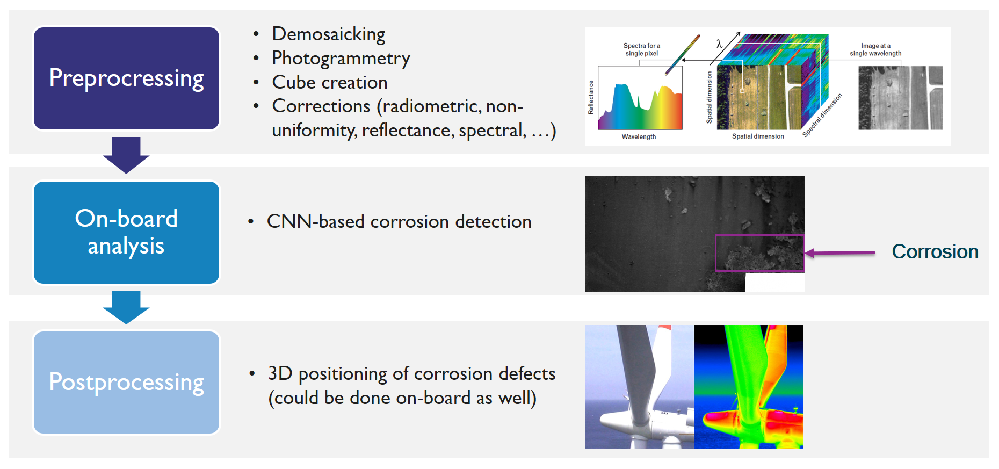
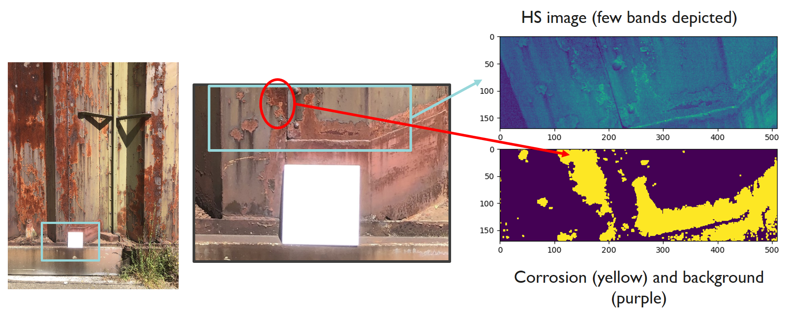

COMP4DRONES
COMP4DRONES is a European project that aims to provide a framework of key technologies to facilitate safe and autonomous drones. It will simplify the development of new applications and functionalities in the fields of transport, construction, surveillance and inspection, logistics and agriculture. More information can be found on the project website. The project is in collaboration with the Integrated Imaging (I2) team of imec and the company Airobot.
My work in the project focuses on the use case of inspection of critical infrastructure, such as off-shore wind turbines or bridges, by means of hyperspectral imaging. More specifically, I aim at designing a processing pipeline based on hyperspectral imagery to detect degradation in the form of corrosion. To that end, I am using data acquired with imec’s dual hyperspectral camera system.
The HSI pipeline - depicted below - is made up of three main modules: pre-processing, on-board analysis and post-processing.

The pre-processing consists of four different sub-modules. First, a demosaicking algorithm is developed to estimate a multispectral image with full spatial-spectral definition. Second, a hyperspectral image cube is created. Third, several corrections are carried out: radiometric, non-uniformity, reflectance, spectral (varying lighting conditions) and corrections coping with degradations due to vibrations, fading, etc. Finally, the hyperspectral images are stitched together and a 3D model is constructed.
The on-board analysis is dealing with the detection of degradations (corrosion) of the material. To this end, AI-algorithms (CNN-based) are developed. The purpose is to implement these algorithms on the Jetson TX2 board in order for them to be executed in real-time. This way the corrosion parts can be identified and located online and the drone can be instructed to fly towards the most degraded areas in order to limit fly-time and avoid that relevant areas remain uncaptured. The final goal is to achieve automatic HS-image-based detection and quantification of corrosion using AI technology with an accuracy of 80% compared to human inspections.

Finally, the post-processing module will position the corrosion defects on the 3D-model acquired from the infrastructure. This sub-module can be conducted online as well in case the final algorithm is fast enough. This way, the drone operator can have a real-time view of the corrosion defects overlaid on the 3D-model.